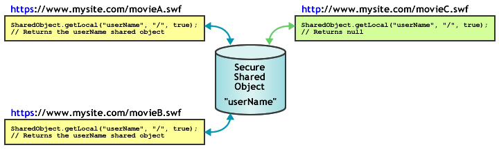

| window.runtime property | window.runtime.flash.net.SharedObject |
| Inheritance | SharedObject |
| Runtime Versions: | AIR 1.0, |
Use shared objects to do the following:
-
Maintain local persistence.
This is the simplest way to use a shared object, and does not require Flash Media Server.
For example, you can call
SharedObject.getLocal()to create a shared object in an application, such as a calculator with memory. When the user closes the calculator, Flash Player saves the last value in a shared object on the user's computer. The next time the calculator is run, it contains the values it had previously. Alternatively, if you set the shared object's properties tonullbefore the calculator application is closed, the next time the application runs, it opens without any values. Another example of maintaining local persistence is tracking user preferences or other data for a complex website, such as a record of which articles a user read on a news site. Tracking this information allows you to display articles that have already been read differently from new, unread articles. Storing this information on the user's computer reduces server load. -
Store and share data on Flash Media Server.
A shared object can store data on the server for other clients to retrieve.
For example, call
SharedObject.getRemote()to create a remote shared object, such as a phone list, that is persistent on the server. Whenever a client makes changes to the shared object, the revised data is available to all clients currently connected to the object or who later connect to it. If the object is also persistent locally, and a client changes data while not connected to the server, the data is copied to the remote shared object the next time the client connects to the object. - Share data in real time. A shared object can share data among multiple clients in real time. For example, you can open a remote shared object that stores a list of users connected to a chat room that is visible to all clients connected to the object. When a user enters or leaves the chat room, the object is updated and all clients that are connected to the object see the revised list of chat room users.
To create a local shared object, call SharedObject.getLocal(). To create
a remote shared object, call SharedObject.getRemote().
When an application closes, shared objects are flushed, or written to a disk.
You can also call the flush() method to explicitly write data to a disk.
Local disk space considerations. Local shared objects have some limitations that are important to consider as you design your application. Sometimes SWF files may not be allowed to write local shared objects, and sometimes the data stored in local shared objects can be deleted without your knowledge. Flash Player users can manage the disk space that is available to individual domains or to all domains. When users decrease the amount of disk space available, some local shared objects may be deleted. Flash Player users also have privacy controls that can prevent third-party domains (domains other than the domain in the current browser address bar) from reading or writing local shared objects.
Note: SWF files that are stored and run on a local computer, not from a remote server, can always write third-party shared objects to disk. For more information about third-party shared objects, see the Global Storage Settings panel in Flash Player Help.
It's a good idea to check for failures related to the amount of disk space and to
user privacy controls. Perform these checks when you call getLocal() and
flush():
-
SharedObject.getLocal()— Flash Player throws an exception when a call to this method fails, such as when the user has disabled third-party shared objects and the domain of your SWF file does not match the domain in the browser address bar. -
SharedObject.flush()— Flash Player throws an exception when a call to this method fails. It returnsSharedObjectFlushStatus.FLUSHEDwhen it succeeds. It returnsSharedObjectFlushStatus.PENDINGwhen additional storage space is needed. Flash Player prompts the user to allow an increase in storage space for locally saved information. Thereafter, thenetStatusevent is dispatched with an information object indicating whether the flush failed or succeeded.
If your SWF file attempts to create or modify local shared objects, make sure
that your SWF file is at least 215 pixels wide and at least 138 pixels high (the
minimum dimensions for displaying the dialog box that prompts users to increase their
local shared object storage limit). If your SWF file is smaller than these dimensions and an
increase in the storage limit is required, SharedObject.flush() fails,
returning SharedObjectFlushedStatus.PENDING and dispatching the netStatus event.
Remote shared objects. With Flash Media Server, you can create and use remote shared objects, that are shared in real-time by all clients connected to your application. When one client changes a property of a remote shared object, the property is changed for all connected clients. You can use remote shared objects to synchronize clients, for example, users in a multi-player game.
Each remote shared object has a data property which is an Object with properties
that store data. Call setProperty()
to change an property of the data object.
The server updates the properties, dispatches a sync event, and
sends the properties back to the connected clients.
You can choose to make remote shared objects persistent on the client, the server, or both. By default, Flash Player saves locally persistent remote shared objects up to 100K in size. When you try to save a larger object, Flash Player displays the Local Storage dialog box, which lets the user allow or deny local storage for the shared object. Make sure your Stage size is at least 215 by 138 pixels; this is the minimum size Flash requires to display the dialog box.
If the user selects Allow, the server saves the shared object and
dispatches a netStatus event with a code property of
SharedObject.Flush.Success.
If the user select Deny, the server does not save the shared object and dispatches
a netStatus event
with a code property of SharedObject.Flush.Failed.
See also
 Hide Inherited Public Properties
Hide Inherited Public Properties Show Inherited Properties
Show Inherited Properties| Property | Defined By | ||
|---|---|---|---|
| client : Object
Indicates the object on which
callback methods are invoked. | SharedObject | ||
 | constructor : Object
A reference to the class object or constructor function for a given object instance. | Object | |
| data : Object [read-only]
The collection of attributes assigned to the data property of the object; these attributes can
be shared and stored. | SharedObject | ||
| defaultObjectEncoding : uint [static]
The default object encoding (AMF version) for all local shared objects created in the SWF file. | SharedObject | ||
| fps : Number [write-only]
Specifies the number of times per second that a client's changes to a
shared object are sent to the server. | SharedObject | ||
| objectEncoding : uint
The object encoding (AMF version) for this shared object. | SharedObject | ||
| prototype : Object [static]
A reference to the prototype object of a class or function object. | Object | |
| size : uint [read-only]
The current size of the shared object, in bytes. | SharedObject | ||
| Method | Defined By | ||
|---|---|---|---|
| addEventListener(type:String, listener:Function, useCapture:Boolean = false, priority:int = 0, useWeakReference:Boolean = false):void
Registers an event listener object with an EventDispatcher object so that the listener
receives notification of an event. | EventDispatcher | |
clear():void
For local shared objects, purges all of the data and deletes the shared object from the disk. | SharedObject | ||
close():void
Closes the connection between a remote shared object and the server. | SharedObject | ||
connect(myConnection:NetConnection, params:String = null):void
Connects to a remote shared object on a server through a specified NetConnection object. | SharedObject | ||
| dispatchEvent(event:Event):Boolean
Dispatches an event into the event flow. | EventDispatcher | |
flush(minDiskSpace:int = 0):String
Immediately writes a locally persistent shared object to a local file. | SharedObject | ||
getLocal(name:String, localPath:String = null, secure:Boolean = false):SharedObject [static]
Returns a reference to a locally persistent shared object that is only available to the current client. | SharedObject | ||
getRemote(name:String, remotePath:String = null, persistence:Object = false, secure:Boolean = false):SharedObject [static]
Returns a reference to a shared object on Flash Media Server that multiple
clients can access. | SharedObject | ||
| hasEventListener(type:String):Boolean
Checks whether the EventDispatcher object has any listeners registered for a specific type
of event. | EventDispatcher | |
| hasOwnProperty(name:String):Boolean
Indicates whether an object has a specified property defined. | Object | |
| isPrototypeOf(theClass:Object):Boolean
Indicates whether an instance of the Object class is in the prototype chain of the object specified
as the parameter. | Object | |
| propertyIsEnumerable(name:String):Boolean
Indicates whether the specified property exists and is enumerable. | Object | |
| removeEventListener(type:String, listener:Function, useCapture:Boolean = false):void
Removes a listener from the EventDispatcher object. | EventDispatcher | |
send(... arguments):void
Broadcasts a message to all clients connected to a remote shared object,
including the client that sent the message. | SharedObject | ||
setDirty(propertyName:String):void
Indicates to the server that the value of a property
in the shared object has changed. | SharedObject | ||
setProperty(propertyName:String, value:Object = null):void
Updates the value of a property in a shared object and indicates to the server
that the value of the property has changed. | SharedObject | ||
| setPropertyIsEnumerable(name:String, isEnum:Boolean = true):void
Sets the availability of a dynamic property for loop operations. | Object | |
| toLocaleString():String
Returns the string representation of this object, formatted according to locale-specific conventions. | Object | |
| toString():String
Returns the string representation of the specified object. | Object | |
| valueOf():Object
Returns the primitive value of the specified object. | Object | |
| willTrigger(type:String):Boolean
Checks whether an event listener is registered with this EventDispatcher object or any of
its ancestors for the specified event type. | EventDispatcher | |
| Event | Summary | Defined By | ||
|---|---|---|---|---|
| [broadcast event] Dispatched when the Flash Player or AIR application gains operating system focus and becomes active. | EventDispatcher | ||
| Dispatched when an exception is thrown asynchronously — that is, from native asynchronous code. | SharedObject | |||
| [broadcast event] Dispatched when the Flash Player or AIR application operating loses system focus and is becoming inactive. | EventDispatcher | ||
| Dispatched when a SharedObject instance is reporting its status or error condition. | SharedObject | |||
| Dispatched when a remote shared object has been updated by the server. | SharedObject | |||
client | property |
client:Object| Runtime Versions: | AIR 1.0, |
Indicates the object on which
callback methods are invoked. The default object is this.
You can set the client property to another object, and callback methods will be
invoked on that other object.
Throws
TypeError — The client property must be set to a non-null object.
|
data | property |
data:Object [read-only] | Runtime Versions: | AIR 1.0, |
The collection of attributes assigned to the data property of the object; these attributes can
be shared and stored. Each attribute can be an object of any ActionScript or JavaScript
type — Array, Number, Boolean, ByteArray, XML, and so on. For example, the following lines assign values to various aspects
of a shared object:
var items_array = new Array(101, 346, 483);
var currentUserIsAdmin = true;
var currentUserName = "Ramona";
var my_so = air.SharedObject.getLocal("superfoo");
my_so.data.itemNumbers = items_array;
my_so.data.adminPrivileges = currentUserIsAdmin;
my_so.data.userName = currentUserName;
for (var prop in my_so.data) {
trace(prop+": "+my_so.data[prop]);
}
All attributes of a shared object's data property are saved if the object is persistent, and
the shared object contains the following information:
userName: Ramona
adminPrivileges: true
itemNumbers: 101,346,483
Note: Do not assign values directly to the data property of a shared
object, as in so.data = someValue; Flash Player ignores these assignments.
To delete attributes for local shared objects, use code such as
delete so.data.attributeName; setting an attribute to
null or undefined for a local shared object does not
delete the attribute.
To create private values for a shared object — values that are available only to the client
instance while the object is in use and are not stored with the object when it is closed — create properties
that are not named data to store them, as shown in the following example:
var my_so = air.SharedObject.getLocal("superfoo");
my_so.favoriteColor = "blue";
my_so.favoriteNightClub = "The Bluenote Tavern";
my_so.favoriteSong = "My World is Blue";
for (var prop in my_so) {
trace(prop+": "+my_so[prop]);
}
The shared object contains the following data:
favoriteSong: My World is Blue
favoriteNightClub: The Bluenote Tavern
favoriteColor: blue
data: [object Object]
For remote shared objects used with a server, all attributes of the data
property are available to all clients connected to the shared object, and all attributes
are saved if the object is persistent.
If one client changes the value of an attribute, all clients now see the new value.
See also
defaultObjectEncoding | property |
defaultObjectEncoding:uint| Runtime Versions: | AIR 1.0, |
The default object encoding (AMF version) for all local shared objects created in the SWF file.
When local shared objects are written to disk, the
SharedObject.defaultObjectEncoding property
indicates which Action Message Format version should be used: the ActionScript 3.0 format (AMF3) or the ActionScript 1.0 or 2.0 format (AMF0).
For more information about object encoding, including the difference between
encoding in local and remote shared objects, see the description of the
objectEncoding property.
The default value of SharedObject.defaultObjectEncoding is set to use the
ActionScript 3.0 format, AMF3.
If you need to write local shared objects that ActionScript 2.0 or 1.0 SWF files can read,
set SharedObject.defaultObjectEncoding to use the
ActionScript 1.0 or ActionScript 2.0 format, flash.net.ObjectEncoding.AMF0,
at the beginning of your script, before you create any local shared objects.
All local shared objects
created thereafter will use AMF0 encoding and can interact with older content.
You cannot change the objectEncoding value of existing local shared objects
by setting SharedObject.defaultObjectEncoding after the local shared
objects have been created.
To set the object encoding on a per-object basis, rather than for all shared objects
created by the SWF file, set the objectEncoding property of the local shared object instead.
See also
fps | property |
fps:Number [write-only] | Runtime Versions: | AIR 1.0, |
Specifies the number of times per second that a client's changes to a shared object are sent to the server.
Use this method when you want to control the amount of traffic between
the client and the server. For example, if the connection between the client
and server is relatively slow, you may want to set fps
to a relatively low value. Conversely, if the client is connected to a multiuser
application in which timing is important, you may want to set fps
to a relatively high value.
Setting fps will trigger a sync event and update all changes to the server.
If you only want to update the server manually, set fps to 0.
Changes are not sent to the server until the sync event has been dispatched.
That is, if the response time from the server is slow, updates may be sent to
the server less frequently than the value specified in this property.
objectEncoding | property |
objectEncoding:uint| Runtime Versions: | AIR 1.0, |
The object encoding (AMF version) for this shared object. When a local shared object is written to disk,
the objectEncoding property indicates which Action
Message Format version should be used: the ActionScript 3.0 format (AMF3)
or the ActionScript 1.0 or 2.0 format (AMF0).
Object encoding is handled differently depending if the shared object is local or remote.
- Local shared objects. You can get or set the value of the
objectEncodingproperty for local shared objects. The value ofobjectEncodingaffects what formatting is used for writing this local shared object. If this local shared object must be readable by ActionScript 2.0 or 1.0 SWF files, setobjectEncodingtoObjectEncoding.AMF0. Even if object encoding is set to write AMF3, Flash Player can still read AMF0 local shared objects. That is, if you use the default value of this property,ObjectEncoding.AMF3, your SWF file can still read shared objects created by ActionScript 2.0 or 1.0 SWF files. - Remote shared objects. When connected to the server, a remote shared object
inherits its
objectEncodingsetting from the associated NetConnection instance (the instance used to connect to the remote shared object). When not connected to the server, a remote shared object inherits thedefaultObjectEncodingsetting from the associated NetConnection instance. Because the value of a remote shared object'sobjectEncodingproperty is determined by the NetConnection instance, this property is read-only for remote shared objects.
Throws
ReferenceError — You attempted to set the value of the objectEncoding
property on a remote shared object. This property is read-only for remote shared objects because
its value is determined by the associated NetConnection instance.
|
See also
size | property |
size:uint [read-only] | Runtime Versions: | AIR 1.0, |
The current size of the shared object, in bytes.
Flash calculates the size of a shared object by stepping through all of its data properties; the more data properties the object has, the longer it takes to estimate its size. Estimating object size can take significant processing time, so you may want to avoid using this method unless you have a specific need for it.
See also
Example ( How to use this example )
"thehobbit".
A property named username is added to the data property of the SharedObject object.
The size property is then traced, which returns the value indicated.
// if these get copied or not
var mySo = SharedObject.getLocal("thehobbit");
mySo.data.username = "bilbobaggins";
air.trace(mySo.size); // 55clear | () | method |
public function clear():void| Runtime Versions: | AIR 1.0, |
For local shared objects, purges all of the data and deletes the shared object from the disk. The reference to the shared object is still active, but its data properties are deleted.
For remote shared objects used with Flash Media Server,
clear() disconnects the object and purges
all of the data. If the shared object is locally persistent, this method also deletes the shared object
from the disk. The reference to the shared object is still active, but its data properties
are deleted.
Example ( How to use this example )
hostName. A property named username
is added to the data property of the SharedObject object.
The clear() method is finally called, which wipes out all information that was added
to the data object (in this case was a single property named username).
var hostName = "yourDomain";
var username = "yourUsername";
function SharedObject_clear() {
var mySo = SharedObject.getLocal(hostName);
if(mySo.data.username == null) {
mySo.data.username = username;
air.trace("set: " + mySo.data.username); // yourUsername
}
else {
mySo.clear();
air.trace("cleared: " + mySo.data.username); // undefined
}
)
close | () | method |
public function close():void| Runtime Versions: | AIR 1.0, |
Closes the connection between a remote shared object and the server. If a remote shared object is locally persistent, the user can make changes to the local copy of the object after this method is called. Any changes made to the local object are sent to the server the next time the user connects to the remote shared object.
connect | () | method |
public function connect(myConnection:NetConnection, params:String = null):void| Runtime Versions: | AIR 1.0, |
Connects to a remote shared object on a server through a specified NetConnection object.
Use this method after calling getRemote().
When a connection is successful, the sync event is dispatched.
Before attempting to work with a remote shared object,
first check for any errors using a try..catch..finally statement.
Then, listen for and handle the sync event before
you make changes to the shared object. Any changes made
locally — before the sync event is dispatched — might be lost.
Call the connect() method
to connect to a remote shared object, for example:
var myRemoteSO = air.SharedObject.getRemote("mo", myNC.uri, false);
myRemoteSO.connect(myNC);
Parameters
myConnection:NetConnection — A NetConnection object that uses the Real-Time Messaging Protocol (RTMP),
such as a NetConnection object used to communicate with Flash Media Server.
| |
params:String (default = null) |
Throws
Error — Flash Player could not connect to the specified remote shared object.
Verify that the NetConnection instance is valid and connected and that the
remote shared object was successfully created on the server.
|
See also
flush | () | method |
public function flush(minDiskSpace:int = 0):String| Runtime Versions: | AIR 1.0, |
Immediately writes a locally persistent shared object to a local file. If you don't use this
method, Flash Player writes the shared object to a file when the shared object session ends —
that is, when the SWF file is closed, when the shared object is garbage-collected
because it no longer has any references to it, or when you call SharedObject.clear()
or SharedObject.close().
If this method returns SharedObjectFlushStatus.PENDING,
Flash Player displays a dialog box asking
the user to increase the amount of disk space available to objects from this domain. To allow
space for the shared object to grow when it is saved in the future, which avoids return values
of PENDING, pass a value for minDiskSpace. When Flash Player
tries to write the file, it looks for the number of bytes passed to
minDiskSpace, instead of looking for enough space to save the shared
object at its current size.
For example, if you expect a shared object to grow to a maximum size of 500 bytes, even
though it might start out much smaller, pass 500 for minDiskSpace. If
Flash asks the user to allot disk space for the shared object, it asks for 500 bytes. After
the user allots the requested amount of space, Flash won't have to ask for more space on future
attempts to flush the object (as long as its size doesn't exceed 500 bytes).
After the user responds to the dialog box, this method is called again. A
netStatus event is dispatched with a code property of
SharedObject.Flush.Success or SharedObject.Flush.Failed.
Parameters
minDiskSpace:int (default = 0) |
String — Either of the following values:
|
Throws
Error — Flash Player cannot write the shared object to disk. This error might
occur if the user has permanently disallowed local information storage for
objects from this domain.
Note: Local content can always write shared objects from third-party domains (domains other than the domain in the current browser address bar) to disk, even if writing of third-party shared objects to disk is disallowed. |
See also
Example ( How to use this example )
hostName. A property named username
is added to the data property of the SharedObject object. The flush() method is
then called, followed by a check to see if the string pending, or a boolean value
of true or false was returned.
One should be aware that all open SharedObject instances will automatically be flushed whenever the
current instance of the application is closed.
var hostName = "yourDomain";
var username = "yourUsername";
function SharedObject_flush() {
var mySo = air.SharedObject.getLocal(hostName);
mySo.data.username = username;
var flushResult = mySo.flush();
air.trace("flushResult: " + flushResult);
air.trace(mySo.data.username); // yourUsername
}
getLocal | () | method |
public function getLocal(name:String, localPath:String = null, secure:Boolean = false):SharedObject| Runtime Versions: | AIR 1.0, |
Returns a reference to a locally persistent shared object that is only available to the current client.
If the shared object does not already exist, this method creates one. If any values
passed to getLocal() are invalid or if the call fails, Flash Player throws an exception.
The following code shows how you assign the returned shared object reference to a variable:
var so:SharedObject = SharedObject.getLocal("savedData");
Note: If the user has chosen to never allow local storage for this domain,
the object is not saved locally, even if a value for localPath is specified. The
exception to this rule is local content. Local content can always write shared objects
from third-party domains (domains other than the domain in the current browser address bar)
to disk, even if writing of third-party shared objects to disk is disallowed.
To avoid name conflicts, Flash looks at the location of the SWF file creating the
shared object. For example, if a SWF file at www.myCompany.com/apps/stockwatcher.swf creates a
shared object named portfolio, that shared object does not conflict with another
object named portfolio that was created by a SWF file at
www.yourCompany.com/photoshoot.swf because the SWF files originate from different directories.
Although the localPath parameter is optional, you should give some
thought to its use, especially if other SWF files need to access the shared object. If the
data in the shared object is specific to one SWF file that will not be moved to another location,
then use of the default value makes sense. If other SWF files need access to the shared object, or
if the SWF file that creates the shared object will later be moved, then the value of this parameter
affects how accessible the shared object will be. For example, if you create a shared object with
localPath set to the default value of the full path to the SWF file, no other SWF
file can access that shared object. If you later move the original SWF file to another location,
not even that SWF file can access the data already stored in the shared object.
To avoid inadvertently restricting access to a shared object, use
the localpath parameter. The most permissive approach is to set
localPath to / (slash), which makes the shared object available to all SWF files
in the domain, but increases the likelihood of name conflicts with other shared objects in
the domain. A more restrictive approach is to append localPath with folder names that are in
the full path to the SWF file. For example, for a portfolio shared object created by the SWF
file at www.myCompany.com/apps/stockwatcher.swf, you could set the localPath parameter to
/, /apps, or /apps/stockwatcher.swf. You must determine which
approach provides optimal flexibility for your application.
Parameters
name:String — The name of the object. The name can include forward slashes (/); for example,
work/addresses is a legal name. Spaces are not allowed in a shared
object name, nor are the following characters:
~ % & \ ; : " ' , < > ? # | |
localPath:String (default = null) | |
secure:Boolean (default = false)
If your SWF file is delivered over a non-HTTPS connection and you try to set this parameter
to The following diagram shows the use of the  |
SharedObject — A reference to a shared object that is persistent locally and is available only to the
current client. If Flash Player can't create or find the shared object (for example, if
localPath was
specified but no such directory exists), this method throws an exception.
|
Throws
Error — Flash Player cannot create the shared object for whatever reason.
This error might occur is if persistent shared object creation
and storage by third-party Flash content is prohibited (does not apply to local content).
Users can prohibit third-party persistent shared objects on the Global Storage Settings panel of the
Settings Manager, located at
http://www.adobe.com/support/documentation/en/flashplayer/help/settings_manager03.html.
|
See also
getRemote | () | method |
public function getRemote(name:String, remotePath:String = null, persistence:Object = false, secure:Boolean = false):SharedObject| Runtime Versions: | AIR 1.0, |
Returns a reference to a shared object on Flash Media Server that multiple clients can access. If the remote shared object does not already exist, this method creates one.
To create a remote shared object, call getRemote() the call
connect() to connect the remote shared object to the server, as in
the following:
var nc = new air.NetConnection();
nc.connect("rtmp://somedomain.com/applicationName");
var myRemoteSO:SharedObject = SharedObject.getRemote("mo", nc.uri, false);
myRemoteSO.connect(nc);
To confirm that the local and remote copies of the shared object are synchronized,
listen for and handle the sync event.
All clients that want to share this object must pass the same values for
the name and remotePath parameters.
To create a shared object that is available only to the current client,
use SharedObject.getLocal().
Parameters
name:String — The name of the remote shared object. The name can include forward slashes (/);
for example, work/addresses is a legal name. Spaces are not allowed in a shared object name,
nor are the following characters:
~ % & \ ; : " ' , > ? ? # | |
remotePath:String (default = null)connect() method.
| |
persistence:Object (default = false)
Note: If the user has chosen to never allow local storage for this domain, the object will not be saved locally, even if a local path is specified for persistence. For more information, see the class description. | |
secure:Boolean (default = false)secure parameter in the
getLocal method entry.
|
SharedObject — A reference to an object that can be shared across multiple clients.
|
Throws
Error — Flash Player can't create or find the shared object. This might occur if nonexistent paths were
specified for the remotePath and persistence parameters.
|
See also
send | () | method |
public function send(... arguments):void| Runtime Versions: | AIR 1.0, |
Broadcasts a message to all clients connected to a remote shared object, including the client that sent the message. To process and respond to the message, create a callback function attached to the shared object.
Parameters
... arguments — One or more arguments: A string that identifies the message,
the name of one or more handler functions to attach to the shared object,
and optional parameters of any type.
The handler name can be only one level deep (that is, it can't be of the
form parent/child) and is relative to the shared object.
The arguments are serialized and sent over the connection, and the
receiving handler receives them in the same order. If a parameter is a
circular object (for example, a linked list that is circular), the
serializer handles the references correctly.
Note: Do not use a reserved term for the function names.
For example, |
setDirty | () | method |
public function setDirty(propertyName:String):void| Runtime Versions: | AIR 1.0, |
Indicates to the server that the value of a property in the shared object has changed. This method marks properties as dirty, which means changed.
Call the SharedObject.setProperty() to create properties for a shared object.
The SharedObject.setProperty() method implements setDirty().
In most cases, such as when the value of a property is a primitive type like String or Number,
you can call setProperty() instead of calling setDirty().
However, when the value of a property is an object that contains its own properties,
call setDirty() to indicate when a value within the object has changed.
Parameters
propertyName:String — The name of the property that has changed.
|
See also
setProperty | () | method |
public function setProperty(propertyName:String, value:Object = null):void| Runtime Versions: | AIR 1.0, |
Updates the value of a property in a shared object and indicates to the server
that the value of the property has changed. The setProperty() method
explicitly marks properties as changed, or dirty.
For more information about remote shared objects see the Flash Media Server documentation.
Note: The SharedObject.setProperty() method implements the setDirty() method.
In most cases, such as when the value of a property is a primitive type like String or Number,
you would use setProperty() instead of setDirty.
However, when the value of a property is an object that contains its own properties,
use setDirty() to indicate when a value within the object has changed.
In general, it is a good idea to call setProperty() rather than setDirty(), because
setProperty() updates a property value only when that value has changed, whereas setDirty()
forces synchronization on all subscribed clients.
Parameters
propertyName:String — The name of the property in the shared object.
| |
value:Object (default = null)null to delete the property.
|
See also
asyncError | Event |
flash.events.AsyncErrorEventproperty AsyncErrorEvent.type =
flash.events.AsyncErrorEvent.ASYNC_ERROR| Runtime Versions: | AIR 1.0, |
Dispatched when an exception is thrown asynchronously — that is, from native asynchronous code.
TheAsyncErrorEvent.ASYNC_ERROR constant defines the value of the
type property of an asyncError event object.
This event has the following properties:
| Property | Value |
|---|---|
bubbles | false
This property applies to ActionScript 3.0 display objects (in SWF files). |
cancelable | false; there is no default
behavior to cancel. This property applies to display objects
in SWF content, which use the ActionScript 3.0 display architecture. |
currentTarget | The object that is actively processing the Event object with an event listener. This property applies to display objects in SWF content, which use the ActionScript 3.0 display architecture. |
target | The object dispatching the event. |
error | The error that triggered the event. |
netStatus | Event |
flash.events.NetStatusEventproperty NetStatusEvent.type =
flash.events.NetStatusEvent.NET_STATUS| Runtime Versions: | AIR 1.0, |
Dispatched when a SharedObject instance is reporting its status or error condition.
The netStatus event contains an info property,
which is an information object
that contains specific information about the event, such as whether a connection
attempt succeeded or whether the shared object was successfully written to the local disk.
type property of a netStatus event object.
This event has the following properties:
| Property | Value |
|---|---|
bubbles | false |
cancelable | false; there is no default behavior to cancel. |
currentTarget | The object that is actively processing the Event object with an event listener. |
info | An object with properties that describe the object's status or error condition. |
target | The NetConnection or NetStream object reporting its status. |
See also
sync | Event |
flash.events.SyncEventproperty SyncEvent.type =
flash.events.SyncEvent.SYNC| Runtime Versions: | AIR 1.0, |
Dispatched when a remote shared object has been updated by the server.
Defines the value of thetype property of a sync event object.
This event has the following properties:
| Property | Value |
|---|---|
bubbles | false |
cancelable | false; there is no default behavior to cancel. |
currentTarget | The object that is actively processing the Event object with an event listener. |
changeList | An array with properties that describe the array's status. |
target | The SharedObject instance that has been updated by the server. |
See also
"application-name". When the Save button is clicked, the
saveValue() method attempts to save a property named savedValue
to the data property of the SharedObject object. If Flash Player must ask for permission to save
the data, when the user grants or denies permission the onFlushStatus() method is
called. When the Clear button is clicked, the clearValue() method deletes the value
saved in savedValue; the next time the SWF file is loaded, the value that is retrieved
is undefined.
Note: To test this example, do the following:
- Add the AIRAliases.js file to the project directory.
- Create an application descriptor file for the project, and test the project using ADL.
<html>
<head>
<script src="AIRAliases.js" />
<script>
var mySo;
var output;
var input;
function init() {
output = document.getElementById("outputText");
input = document.getElementById("inputText");
mySo = air.SharedObject.getLocal("test");
output.innerHTML += "SharedObject loaded...\n";
output.innerHTML += "loaded value: " + mySo.data.savedValue + "\n\n";
}
function saveValue() {
output.innerHTML += "saving value...\n";
mySo.data.savedValue = input.value;
var flushStatus = null;
try {
flushStatus = mySo.flush(10000);
} catch (error) {
output.innerHTML += "Error...Could not write SharedObject to disk\n";
}
if (flushStatus != null) {
switch (flushStatus) {
case air.SharedObjectFlushStatus.PENDING:
output.innerHTML += "Requesting permission to save object...\n";
mySo.addEventListener(air.NetStatusEvent.NET_STATUS, onFlushStatus);
break;
case air.SharedObjectFlushStatus.FLUSHED:
output.innerHTML += "Value flushed to disk.\n";
break;
}
}
output.innerHTML += "\n";
}
function clearValue() {
output.innerHTML += "Cleared saved value...Reload application and the value should be \"undefined\".\n\n";
delete mySo.data.savedValue;
}
function onFlushStatus(event) {
output.appendText("User closed permission dialog...\n");
switch (event.info.code) {
case "SharedObject.Flush.Success":
output.innerHTML += "User granted permission -- value saved.\n";
break;
case "SharedObject.Flush.Failed":
output.innerHTML += "User denied permission -- value not saved.\n";
break;
}
output.innerHTML += "\n";
mySo.removeEventListener(air.NetStatusEvent.NET_STATUS, onFlushStatus);
}
</script>
</head>
<body onload='init()'>
<p>Value to save:
<input type="text" id="inputText" style="width:400px" /></p>
<p>Output:</p>
<p><textarea id="outputText" style="height:200px; width:95%" ></textarea></p>
<p><input type="button" name="saveBtn" value="Save" onclick="saveValue()"/>
<input type="button" name="clearBtn" value="Clear" onclick="clearValue()"/></p>
</body>
</html>Thu Sep 29 2011, 02:34 AM -07:00